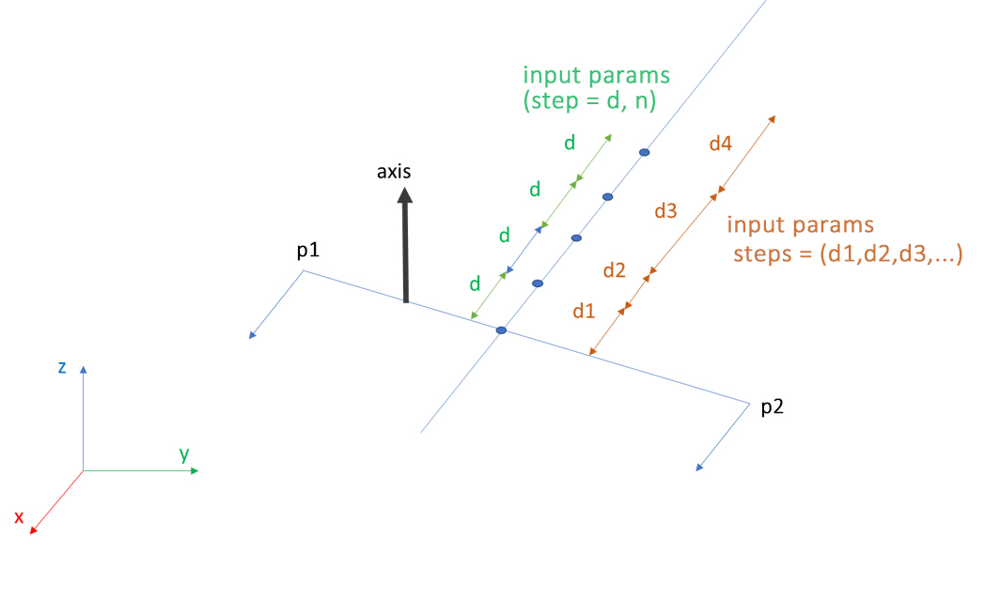

% TODO: inserire foto
Script Usage
orthophoto.jl
Orthographic projection of 3D point cloud.
Options:
$ julia orthophoto.jl -h
positional arguments:
source A text file with Potree directories list or a
single Potree directory
optional arguments:
-o, --output OUTPUT Output image
--bbin BBIN Bounding box as 'x_min y_min z_min x_max y_max
z_max' or Potree JSON volume model
--po PO Projection plane: XY+, XY-, XZ+, XZ-,
YZ+, YZ- (default: "XY+")
--gsd GSD Resolution (type: Float64, default: 0.3)
--quote QUOTE Distance of plane from origin (type: Float64)
--thickness THICKNESS
Section thickness (type: Float64)
--pc If true a point cloud of extracted model is saved in a
LAS file
--bgcolor BGCOLOR Background color
-h, --help show this help message and exitExamples:
# Orthographic projection of top view
julia orthophoto.jl "C:/Potree_projects.txt" -o "C:/image.jpg" --bbin "0 0 0 1 1 1" --bgcolor "0 0 0"segment.jl
Point cloud segmentation.
Clipping volume are described by:
- bbox: axis aligned bounding box
- jsonfile: JSON format
- c,e,r: position, scale, rotation
Options:
$ julia segment.jl -h
positional arguments:
source A text file with Potree directories list or a
single Potree directory
optional arguments:
-o, --output OUTPUT Output file: LAS format
--bbox BBOX Bounding box as 'x_min y_min z_min x_max y_max
z_max'
--jsonfile JSONFILE Path to Potree JSON volume model
--c C Position: center of volume
--e E Scale: size of box
--r R Rotation: Euler angles (radians) of rotation of
box
-h, --help show this help message and exitExamples:
# axis aligned bounding box
julia segment.jl "C:/Potree_projects.txt" -o "C:/partition.las" --bbox "0 0 0 1 1 1"
# JSON format
julia segment.jl "C:/Potree_projects.txt" -o "C:/partition.las" --jsonfile "C:/volume.json"
# position, scale, rotation
julia segment.jl "C:/Potree_projects.txt" -o "C:/partition.las" --c "0. 0. 0." --e "1. 1. 1." --r "1.5707963267948966 0. 0."slicing.jl
Point cloud slicing.
Return one LAS file per slice.
First slice is described with these parameters:
- p1: start point
- p2: end point
- axis: a versor of plane
- thickness: thickness
Step between slices can be constant or variable, as shown in Figure below. If not provided returns only first slice.

Options:
$ julia slicing.jl -h
positional arguments:
source A text file with Potree directories list or a
single Potree directory
optional arguments:
-p, --projectname PROJECTNAME
Project name
-o, --output OUTPUT Output folder
--bbin BBIN Bounding box as 'x_min y_min z_min x_max y_max
z_max' or Potree JSON volume model
--p1 P1 Start point
--p2 P2 End point
--axis AXIS A vector in plane (default: "0 0 1")
--thickness THICKNESS
Section thickness (type: Float64, default:
0.1)
--step STEP Constant distance between sections (type: Float64)
--n N Number of sections (type: Int64)
--steps STEPS Distance between sections
-h, --help show this help message and exitExamples:
# One slice
julia slicing.jl "C:/Potree_projects.txt" -o "C:/folder" -p "My_Proj" --bbin "0 0 0 1 1 1" --p1 "0 0 0" --p2 "1 1 1" --axis "0 0 1" --thickness 0.2
# Costant distance between slice
julia slicing.jl "C:/Potree_projects.txt" -o "C:/folder" -p "My_Proj" --bbin "0 0 0 1 1 1" --p1 "0 0 0" --p2 "1 1 1" --axis "0 0 1" --thickness 0.2 --step 1 --n 10
# Variable distance between slice
julia slicing.jl "C:/Potree_projects.txt" -o "C:/folder" -p "My_Proj" --bbin "0 0 0 1 1 1" --p1 "0 0 0" --p2 "1 1 1" --axis "0 0 1" --thickness 0.2 --steps "1 1 2 3 1 1 5 6"